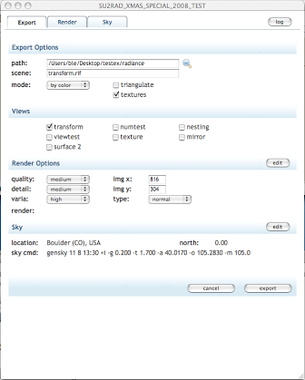
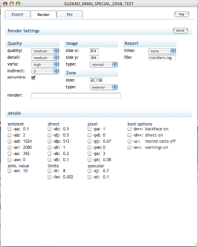
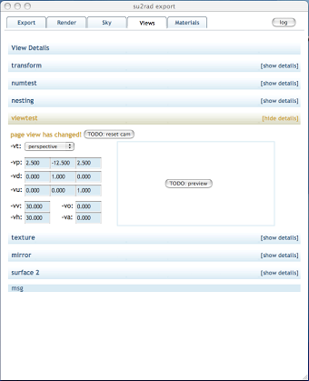
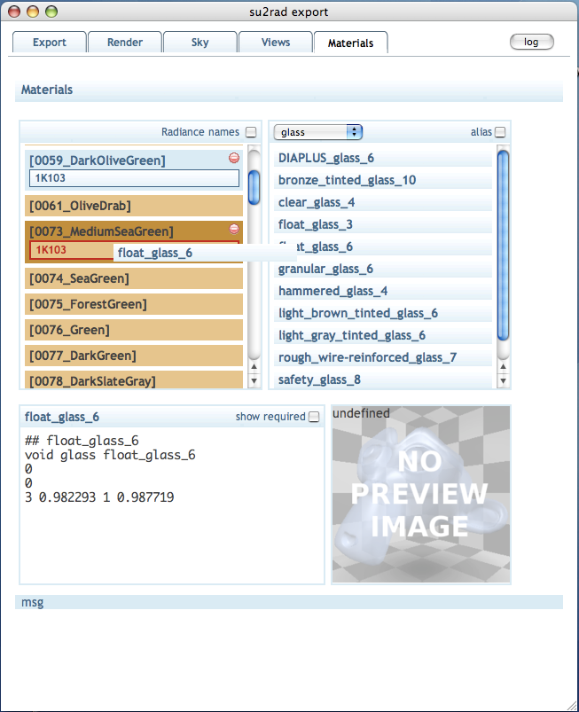

Su2rad
SketchUp to Radiance Exporter
View the Project on GitHub
maintained by tbleicher
Su2rad User Documentation
The interface is based on JavaScript and displayed in a web browser window from within SketchUp. The web browser can communicate with SketchUp and load data on demand or send data to the Ruby script. Essential for the interface is that we can use all the interactivity of modern web pages to update the content of the web page based on user input.
The interface is structured with a common tab-style interface that spreads the content of one long page onto multiple tab pages. Each of these pages contains controls for a particular context. You can switch between the tabs by clicking on the tab names or via the 'edit' buttons to the right of a section header.
Most settings are now stored in the SketchUp file. If you open a file that you have exported before all your settings (like render quality or material assignments) should be restored. The settings are only permanent if you save the file after you have opened the export dialog. You will be asked to save your file if you try to close SketchUp. So even if you did not change any of the geometry yourself, the export might have modified some settings which need saving.
Export Tab
The Export tab combines general export options with a
selection of views to export and the most common Radiance options used by
rad (*.rif file).
Export Options
The general export options are the
- export path (directory to export to)
- scene name (the name for the scene files in the directory)
- export mode and depending on this
- triangulate - SketchUp and Radiance support polygons with more than 3 vertices. Su2rad will export n-gons by default. If you find that this causes problems with your geometry use this option to convert all faces to trinagles.
- textures - Textures require the installation of ImageMagick on your computer. Texture coordinates are reported in two ways by SketchUp. There is no good way to decide which is the correct one so the result of the texture mapping may be incorrect.
- global coordinates - The export option
by group will export each group and component definition to
a separate file and reproduce the nested SketchUp scene structure with
!xform ...calls to the individual files. This option forces su2rad to export the scene objects to global coordinates. This will result in a larger size of the exported geometry. The options by color and by layer enable global coordinates implicitly.
Previously the export created a new subfolder for every active scene that was exported. This guaranteed that different visibility settings in scenes were exported correctly. Now the default path is controlled via a template to allow you to choose between on common export folder or individual folders for each scene. Unfortunately there is no dialog to set this template yet so you're stuck with the default of one common export folder per project.
Views
You can now select which of the scenes (if there are any in the SketchUp
file) should be exported as view files. Only scenes that save the camera
position are considered in this list. Please note that all views are exported
to files but only the selected views will be active in the *.rif
file. Unselected views are still exported but placed into the
*.rif file as a comment.
Render Options
The Render Options allow you to change the
QUALITY etc. settings for rad. On this page only a
subset of the options is shown. More are available on the
Render tab.
The image size settings are taken from the previous export settings or the current SketchUp screen. If you change the x-size the y-size will be changed proportionally. If you change the y-size you will modify the aspect of the image. So if you want to set a fixed image size first change x, then change y.
Sky
The Sky settings show a summary of the shadow and location settings and how these are translated into a gensky command for Radiance. You can edit this command on the Sky tab.

Render Tab
The Render tab allows you to set advanced options
for the rad input file.
The upper part has common options affecting the quality setting of the
rtrace/rpict command while the details part gives you control
over the individual settings. This page is fully interactive and updates
nearly every time you change an option. If you have an older Mac you might
notice the slow refresh while the browser recalculates the new options.
This page duplicates the some of the rad functionality in JavaScript to
calculate the render options from the quality settings. Therefore you will
see some of the detailed options change their value if you change ie. the
Quality option. You have two ways to overwrite the render settings:
- select the check box next to an option and enter the new values in the text filed that appears
- type directly in the render line text field. The script will reject all options it does not know about or which are incorrect specified on the command line. Sadly that means that you can't enter any options that are not yet implemented.

Sky Tab
On the Sky tab you can add additional options to gensky
(and in the
future other sky generators). The apply button in the top right corner
allows you write back your settings to the SketchUp model (like time and
location). The settings will only be saved when you save the SketchUp
file, though.
The gensky options work like the options for rpict/rtrace. There is a
blue status line at the bottom of the page that shows the gensky command
line options as they will be written to the sky file.

Views Page
The Views page gives more detailed information on the views
set up in SketchUp. You can open the details by clicking on the header
label or the [show details] on the right side. The headers are usually
in a blue color; only if the view on the SketchUp page was changed since
you first used the export dialog, they are shown in yellowish-brown. There
will be a feature to update the view from the page and vice versa but it's
just not there yet.
You can, however, use the select and entry boxes to set Radiance-only view options, like special projection types and clipping planes. These settings are stored in an attribute and will be read from the file if you have to open it again. The preview option does not work yet.
There are some handling issues with these controls that have to be worked out. The settings are not coordinated well with view changes in the SketchUp model, selection of views and the image size settings. These are known issues.

Materials Page
On the Materials page you can assign Radiance material definitons
to SketchUp materials. Radiance materials are read in from Radiance scene
files in the su2radlib/ray subfolder that have a *.rad
or *.mat file
extension. Example materials from the Radiance distribution are already in
place. Not all material definitions can be read by the script but those
that follow the
<mod> <primitive> <id> <nargs> [args] <nargs> [args] <nargs> [args]
syntax should work. There is no verification of dependencies on .cal or data files. If these are required they have to be in the Radiance search path during rendering. Dependencies on other definitions ('patterns') are only checked against materials that have already been read from the file or a previous file.
Currently there is no way of grouping materials, i. e. by file name or by tags. I'm open for ideas on this. You can filter by material type and extend the display to include aliases. These are usually not displayed.
The SketchUp materials are displayed in three diffferent ways:
- Materials without corresponding names in the Radiance library are yellowish-brown. If there is no alias assigned to them for the export there will be a simple conversion of the SketchUp color.
- Materials with corresponding names in the library are displayed in blue. They are exported with the definition from the library unless they are assigned another material.
- Materials that have been assigned a Radiance definition are blue, too, and show the definition below the name. The definition from the library will be copied to the 'materials.rad' file and an alias for the SketchUp material name will be added.
To assign a material to a SketchUp material drag the entry from the right column over the material in the left. The color of the SketchUp entry will change to a darker shade and if you are about to replace an existing alias it will be outlined in red.
Below the two list panels there is a window showing the definition of the Radiance material. The display is set by a click on the material label. The preview panel to the right will show a rendering of the material once this information can be stored with the material or it can be created dynamically.
